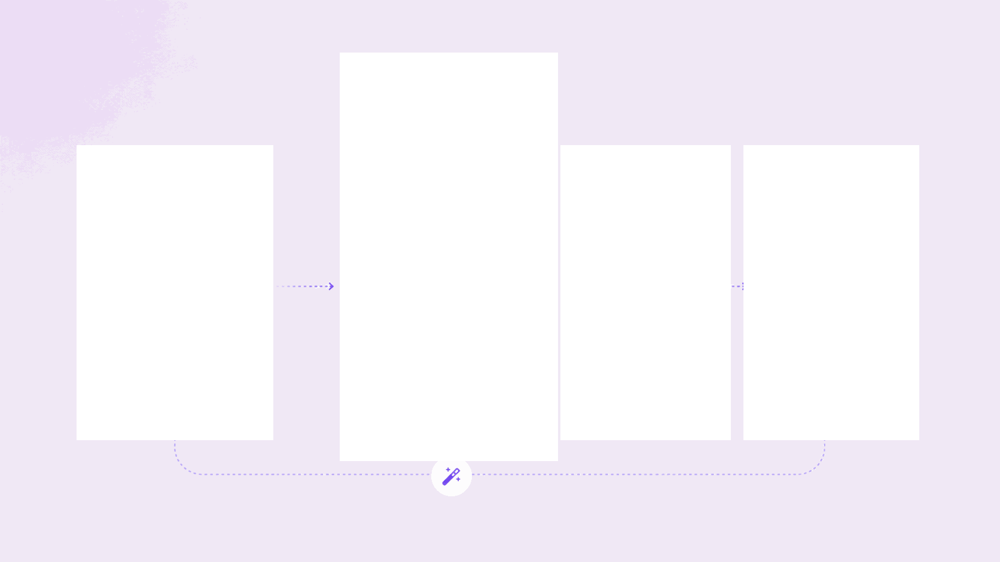
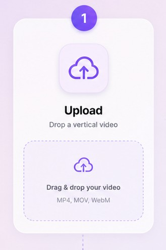
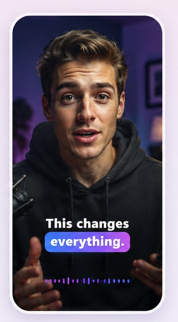
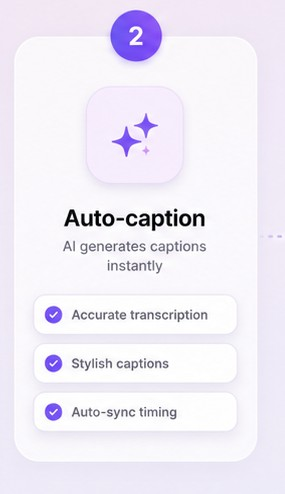
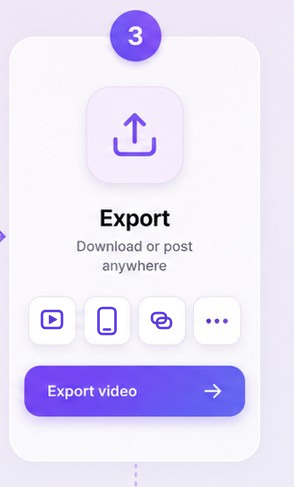

Automatische Untertitel in Sekunden.
Animierte Untertitel Wort für Wort für Reels, TikTok und YouTube Shorts. Clip hochladen, Style wählen, MP4 herunterladen. Kostenlos während der Beta.
Dein Video bleibt auf deinem Gerät – nur die Tonspur wird zur Transkription gesendet. Kein Konto nötig – nur deine E-Mail vor dem Download.
Ein Video. 30+ Untertitel-Styles.
Von knalligen Karaoke-Untertiteln bis zu ruhigen Untertiteln. Tippe auf einen Style und sieh ihn an einem Beispielvideo.
Gratis. Kein Wasserzeichen. Ohne Konto.
Viele Gratis-Untertitel-Tools setzen ihr Logo in dein Video oder verlangen zuerst ein Konto. Gluephs nicht.
Kein Wasserzeichen
Dein MP4 ist sauber und bereit zum Posten. Kein Logo, kein Abspann.
Kein Konto nötig
Seite öffnen, Clip hochladen, Video herunterladen. Nur deine E-Mail vor dem Download.
Alle Styles inklusive
Alle Untertitel-Styles, der Editor, SRT und VTT – gratis während der Beta.
Dein Video bleibt bei dir
Das Video wird in deinem Browser gerendert. Nur die Tonspur geht zur Transkription.
So fügst du Untertitel zu deinen Reels und TikToks hinzu.
Drei Schritte, keine Schnittkenntnisse, nichts zu installieren.





- Clip hochladenDie Sprache wird automatisch transkribiert, die Untertitel erscheinen Wort für Wort.
- Wörter korrigieren & Style wählenTippe auf eine Zeile, um ein Wort oder das Timing zu korrigieren, und wähle einen von 30+ Styles.
- Herunterladen & postenEin MP4 mit eingebrannten Untertiteln für Reels, TikTok oder Shorts – oder eine SRT-/VTT-Datei.
Ein KI-Untertitel-Generator für Kurzvideos.
Gluephs ist ein kostenloses Browser-Tool, das die Sprache in deinem Video in animierte Untertitel verwandelt – Wort für Wort, für Instagram Reels, TikTok und YouTube Shorts.
Wort für Wort & editierbar
Korrigiere jedes Wort und sein Timing direkt im Editor.
30+ Untertitel-Styles
Von knalligen Pop-Captions bis zu ruhigen Untertiteln – Wechsel mit einem Klick.
16 Sprachen, automatisch erkannt
Deutsch, Englisch, Französisch, Italienisch, Spanisch und mehr. Die gesprochene Sprache wird automatisch erkannt.
Namen, Orte & Dialekt
Ein KI-Korrekturdurchgang berichtigt falsch verstandene Namen und Orte. Für knifflige Wörter trägst du eigene Namen & Begriffe ein.
Keywords, Emojis & Zoom
Die optionale KI-Hervorhebung betont wichtige Wörter, setzt Emojis und dezente Zooms.
Post-Text & Hashtags
Erhalte einen Vorschlag für Post-Text und Hashtags, in der Sprache deines Videos.
Rendert auf deinem Gerät
Nur die Tonspur geht zur Transkription; das MP4 entsteht in deinem Browser.
MP4, SRT, VTT & TXT
Ein fertiges MP4 ohne Wasserzeichen oder Untertiteldateien für dein Schnittprogramm oder YouTube.
Einfache, ehrliche Preise.
Starte kostenlos. Pläne mit mehr Transkriptionsminuten folgen.
Beta – alles kostenlos, solange wir bauen.
Gratis
$0
- KI-Transkription (Whisper large-v3)
- Alle 30+ Untertitel-Styles
- Export als MP4, SRT & VTT
- Gratis während der Beta · ohne Wasserzeichen · nur deine E-Mail
Creator
$7.99/Monat
ca. CHF 6.50 / € 7
- 300 Transkriptionsminuten pro Monat
- Alle 30+ Untertitel-Styles
- Untertitel ins Englische übersetzen
- Projekte im Konto speichern
Pro
$14.99/Monat
ca. CHF 12 / € 14
- 1200 Transkriptionsminuten pro Monat
- Alles aus Creator
- Stapelverarbeitung (folgt bald)
- Projekte im Konto speichern
Geplante Preise in US-Dollar; die Beträge in CHF und Euro sind ungefähre Werte. Der endgültige Preis erscheint beim Bezahlen in deiner Währung.
Häufige Fragen
Ja – kostenlos während der Beta, ohne Konto. Untertitel erstellen und als MP4 ohne Wasserzeichen, SRT und VTT exportieren; vor dem ersten Video-Download fragen wir nur nach deiner E-Mail. Creator- und Pro-Pläne mit mehr Transkriptionsminuten folgen bald. Während der Beta gibt es nie ein Wasserzeichen.
Gratis bleibt für die ersten 2 Videos pro Tag ohne Wasserzeichen; ab dem 3. Video pro Tag erscheint ein kleines Wasserzeichen. Bezahlpläne haben nie ein Wasserzeichen.
Nein. Seite öffnen, Video hochladen und das MP4 mit Untertiteln herunterladen – ohne Konto, ohne Passwort. Vor dem ersten Video-Download fragen wir nach deiner E-Mail.
Gluephs ist in der Beta: Möglichst viele Creator sollen es ausprobieren und uns sagen, was besser werden soll. Während der Beta sind alle Funktionen gratis und Videos bekommen nie ein Wasserzeichen. Kommen später bezahlte Pläne mit Zusatzfunktionen, kündigen wir das vorher an.
Lade dein Video auf dieser Seite hoch, prüfe die Untertitel, wähle einen Style und lade das MP4 herunter. Die Untertitel sind ins Video eingebrannt – du kannst die Datei direkt als Reel, TikTok oder Short posten.
16 Sprachen, automatisch erkannt: Deutsch, Englisch, Spanisch, Französisch, Italienisch, Portugiesisch, Niederländisch, Polnisch, Türkisch, Russisch, Ukrainisch, Japanisch, Koreanisch, Chinesisch, Arabisch und Hindi. Du kannst die Sprache auch selbst wählen.
Ja, Deutsch wird voll unterstützt. Ein KI-Korrekturdurchgang hilft bei Namen, Orten und Dialektwörtern. Bei Schweizerdeutsch und anderen starken Dialekten können trotzdem Fehler vorkommen – prüfe die Untertitel deshalb vor dem Export und korrigiere einzelne Wörter im Editor.
Gluephs nutzt das Sprachmodell Whisper large-v3 plus einen KI-Korrekturdurchgang für Namen, Orte und Dialekte. Knifflige Namen oder Markenbegriffe trägst du im Feld «Names & terms» ein. Das läuft auf dem Server (nichts herunterzuladen), und jedes Wort kannst du im Editor korrigieren.
Ein MP4 mit eingebrannten Untertiteln (standardmässig 1080p, bereit zum Posten), SRT- und VTT-Untertiteldateien für Schnittprogramme oder YouTube sowie ein reines TXT-Transkript.
Ja. Gluephs läuft im Browser deines Handys, du musst keine App installieren, und das MP4 entsteht direkt auf dem Gerät. Kann dein Browser ein bestimmtes Video nicht exportieren, lädst du trotzdem die SRT- oder VTT-Datei herunter.
Nein. Gluephs läuft in deinem Browser. Video hochladen, Style wählen, exportieren – keine App, kein Plugin.
Nein. Nur die Tonspur wird zur Transkription gesendet, und wir speichern weder Ton noch Transkript auf unseren Servern. Das Video selbst wird lokal in deinem Browser gerendert und exportiert. Details in der Datenschutzerklärung.
Bezahlpläne gibt es noch nicht – Gluephs ist während der Beta kostenlos. Wenn Creator und Pro starten, sind sie monatlich kündbar.
Probier’s mit deinem nächsten Clip.
Deine ersten Untertitel in Sekunden. Kostenlos während der Beta – ohne Konto.